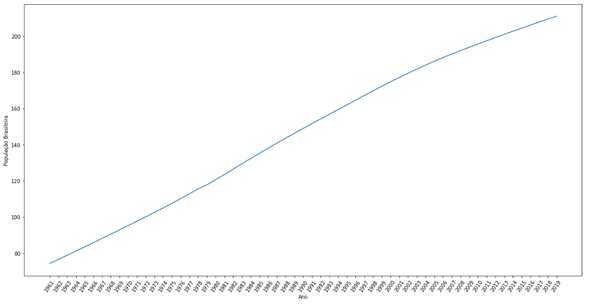

Web Scraping Básico com Python
Nesse primeito post vou mostrar como fazer Web Scraping básico porém poderoso. O site que faremos o scraping será o https://www.worlddata.info, que contém uma série de dados sobre os países. O objetivo desse post é apenas para estudo! Use por sua conta e risco!
Primeiro importamos as bibliotecas necessárias:
import requests
from bs4 import BeautifulSoup
import pandas as pd- O pacote requests é utilizado para fazer requisições aos servidores que hospedam a página.
- Do pacote bs4 vamos utilizar o BeautifulSoup que vai nos ajudar no tratamento do html.
- Com o pandas vamos criar um dataframe para manipular de maneira mais fácil os dados.
url = 'https://www.worlddata.info/america/brazil/populationgrowth.php'
cabecalhos = {'User-Agent':'Mozilla/5.0 (Windows NT 10.0; Win64; x64) AppleWebKit/537.36 (KHTML, like Gecko)'}
pagina = requests.get(url, headers = cabecalhos)
html = BeautifulSoup(pagina.text, 'html.parser')- url é o endereço da página alvo
- cabecalhos é para o servidor interpretar que é um browser Chrome que está fazendo a requisição GET
- pagina é o retorno da nossa requisição
- html é o nosso arquivo formatado pelo BeaultifulSoup
Aqui fazemos a extração da tabela que contém os dados que precisamos:
tabela = html.find('table', {'class': 'std100 hover'})- A variável tabela está recebendo a parte do html que contém a table com a classe std100 hover
Agora vamos extrair os cabeçalhos da tabela, lembrando que esses cabeçalhos são diferentes dos que usamos anteriormente na requisição da pagina!
cabecalhos = tabela.find_all('th')- Aqui a variável cabecalhos recebe todos os elementos th que existiam dentro da variável tabela
Saída:
[<th class="left">Jahr</th>,
<th>Population<br/>Brazil</th>,
<th>Change</th>,
<th>Birthrate</th>,
<th>Deathrate</th>,
<th>Population<br/>World</th>,
<th>Change</th>]Fazemos a extração apenas do texto que existe em cada elemento th
cabecalhos = [item.text for item in cabecalhos]Saída:
['Jahr',
'PopulationBrazil',
'Change',
'Birthrate',
'Deathrate',
'PopulationWorld',
'Change']Aqui pesquisamos todos os tr que existem dentro da variável tabela
linhas = tabela.find_all('tr', {'class':'nowrap right'})Um trecho da saída:
<tr class="nowrap right"><td class="left">1961</td><td>74.35 M</td><td>2.97 %</td><td> </td><td> </td><td class="blank"></td><td>3,075 M</td><td>1.35 %</td></tr>,
<tr class="nowrap right"><td class="left">1962</td><td>76.57 M</td><td>2.99 %</td><td> </td><td> </td><td class="blank"></td><td>3,128 M</td><td>1.72 %</td></tr>,Próximo passo é remover o M e % que existe em alguns td
import re
conteudo_por_linha = []
remover_simbolos = '% M‰'
pattern = "[" + remover_simbolos + "]"
for linha in linhas:
dado_elemento = linha.find_all('td')
dado_elemento = [re.sub(pattern, '', item.text) for item in dado_elemento]
conteudo_por_linha.append(dado_elemento)Montando o nosso Data Frame
import pandas as pd
df = pd.DataFrame(conteudo_por_linha)
df.drop(5, axis = 1, inplace = True)Mostrando os primeiros registros do Data Frame
df.columns = cabecalhos
df.head()
Jahr PopulationBrazil Change Birthrate Deathrate PopulationWorld Change
0 1961 74.35 2.97 3,075 1.35
1 1962 76.57 2.99 3,128 1.72
2 1963 78.85 2.98 3,193 2.07
3 1964 81.17 2.94 3,258 2.05
4 1965 83.50 2.87 3,325 2.05Convertendo a variável PopulationBrazil em float
df['PopulationBrazil'] = df['PopulationBrazil'].astype('float')Plotando um gráfico
import matplotlib.pyplot as plt
import seaborn as sns
plt.figure(figsize=(20,10))
plt.xticks(rotation = 55)
sns.lineplot(data = df, x = 'Jahr', y = 'PopulationBrazil')
plt.xlabel('Ano')
plt.ylabel('População Brasileira')
plt.show()